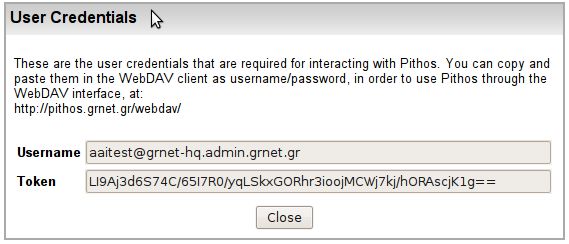

Το σύστημα παρέχει πρόσβαση στα αρχεία και τους καταλόγους του χρήστη και μέσω του πρωτοκόλλου webDAV, ή τα λεγόμενα web folders. Το webDAV υποστηρίζεται από Windows 2000, XP (όχι Vista), διάφορες εκδόσεις UNIX/Linux και Mac OS. Η δομή του δεν επιτρέπει authentication μέσω Sybboleth καθώς απαιτεί username/password authentication μέσα από το ίδιο το πρωτόκολλο. Έτσι, όταν ο χρήστης ορίζει το webDAV folder θα πρέπει να δώσει τα εξής:
|

Στοιχεία πρόσβασης για webDAV access |